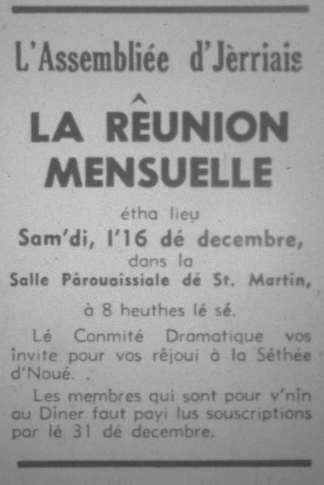

L'Assembliée d'Jèrriais

Rêunion mensuelle
La rêunion mensuelle eut lieu sam'di, 1'16 dé décembre, dans la Salle Publyique dé St. Martîn. Y'avait au mains 150 membres qui lus y rêunîtent pour la séthée d'Noué, si bein arrangi par lé Conmité Dramatique.
D'vant c'menchi l's affaithes, lé Président d'mandit ès membres dé lus l'ver eune minnute en silence en mémouaithe dé Mme. Laurens et Moussieu T. G. Le Marinel, décédés.
Lé rapport dé la rêunion du mais d'novembre fut liu et accepté. La correspondance fut liue et eune nouvelle membre fut êlue.
Annonces
Lé Président annoncit lé dîner à la Pomme d'Or, jeudi, 1'25 dé janvyi. 1968, et qu'les billets s'saient à vendre du 6 au 20 d'janvyi siez l'trésôryi et à l'office du Sieur H. W. Maillard, 34 Great Union Road.
Lé restant d'la séthée 'tait dans les mains du Conmité Dramatique.

Mme. E. Le Sueur, d'vant c'menchi, dit que la Dlle. L. Picot 'tait pas bein asses pour v'nîn et Mme. Alice Blampied avair envyer eune carte disant qu'oulle avait r'gret dé n'pouver pas v'nîn à cause dé maladie et souhaité tous un Bouan Noué.
Divèrtissements
Lé preunmyi item 'tait eune récitâtion par Susan Le Téxier, “J'lé Vis”, et auprés Moussieu et Mme. G. J. Perchard amusîtent les membres auve un dialogue inmpromptu, Mme. Perchard, eune fée sus l'bouais d'Noué. Les membres futent bein amusés auve ches deux ichîn.
Les Méssieux N. Pallot E. de Gruchy et G. Le Masurier fîtent “Frére Jacques” auve les membres d'Assembliée. Les femmes avaient d'la peiné á r'connaître chînq hommes en c'mînsole et dêdgisés autrément.
Lé Sieur G. Le Masurier et les membres chantîtent “Allouette” et “Rouoge-Gorge” fut chanté par plusieurs membres du Conmité.
L'histouaithé de Noué
Les membred du Conmite n'avaient pas oublier l'originne dé Noué. Mme. Perchard avait arrangi en deux parties l'histounaithe qu'oulle 'tait á raconter comme eune méthe á ses êfants (Susan et Jeffery Le Téxier) d'vant lus couochi la Sérvelle dé Noué et dans l'histouaithe. “Petite Ane” fut chanté par la Dlle R Amy.
Aupres chennechîn des membres auve des lanternes veint chantant "Sainte Nuit", suivi par “Le Fis d'Marie”, par la Dlle Amy. A m'suthe que les difféthents caractéthes v'naient sus la strade, les membres chantaient ensemblyes les cantiques dé Noué à m'suthe que Mme. Perchard les annoncaient.
Les siens qui prîndrent part 'taient Moussieu et Mme. R. Le Téxier, Mme. F. de la Mare, Audrey Le Feuvre, Gloria Marett, Susan Le Téxier, les Mêssieux J.L. Gibaut et G. Marett, Jeffrey Le Téxier et les Mêssieux P.J. Romeril, G.j. Perchard et J.N. Richard.
Auprès la scène, les membres du Conmité Dramatique et plusieurs autres à lus aîdgi servîtent un bouan souper de beurrées, gâche de pâte et du pâté.
Lé Connêtabl'ye fut d'mandé dé haler les neunméthos pour la râfliéthie et Mme. Billot présentit les prix ès gângnants.
Lé Président èrmercyit lé Conmité pour lé souper et l'Connêtabl'ye pour aver prêté la salle acouo eune fais et souhaitit un Bouan Noué à touos les membres.
Lé Connêtabl'ye dit que ch'tait un pliaîsi pour li d'aver peux v'nîn et ch'tait un pliaîsi d'aver L'Assembliée autchun temps; la séthé avait 'té si bein arrangie et lé tableau si bein fait par tous tchi avaient prîns part.
Tous dithaient en sortant que ch'avait 'té eune raide bouanne séthée et pathaissaient ben satisfait. Ch'fut certainement un bouan finnissement pour l'année et faut espéther que l'année 1968 s'en va êt' aussi bein!
Viyiz étout: